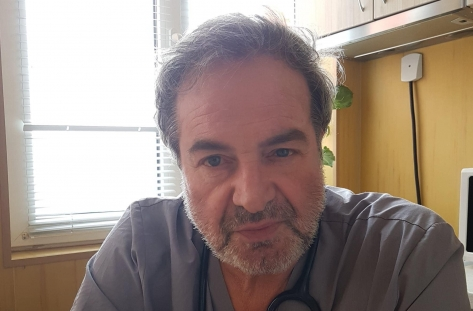

През 2013г. е удостоен с Приза „Лекар на годината“ към Лекарска колегия гр. Плевен, а през 2016г. придобива и Националния приз „Стоте лекари, на които вярваме“ под патронажа на Председателя на Народното събрание на Република България. През 2017 година успешно защитава и придобива научна степен „Доктор” по медицина. От декември 2018г. е ръководител катедра „Анестезиология и Реаниматология”, към Медицински Университет – Плевен.

Специалист по Образна диагностика , с професионални интереси към онкодиагностика и мамология.
Участвал в програмите ESDIR, HALEY Project, Galen Project и множество курсoве, организирани от Европейското училище по радиология.
Бил е част от Мултидисциплинарната онкологична комисия. Членувал в Националния експертен борд за поведение при простатен карцином и рак на млечната жлеза.

Д-р Стефан Касабов е роден през 1963 г. в Бургас, 25 години работи като хирург, специализирал спешна хирургия. Има натрупан солиден опит. Той е носител на наградата „Лекар на годината“ за помощта, оказана на пострадалите при атентата на Летище-Бургас през 2012 г. Интересите му са основно в областта на здравеопазването като един от най-изявените бургаски лекари. „Здравеопазването е огледало на това, което се случва в обществения живот – като резултат, структура и дейност.“,

Всеотдаен лекар, отличен хирург и онколог, проф. Каранов отдаде живота и знанията си в служба на хората.
Неговите пациенти го уважаваха заради професионализма и човешките му качества и винаги му вярваха.
В началото на настоящия век проф. Страшимир Каранов заема редица ръководни постове в Специализираната болница за активно лечение по онкология и в Националния онкологичен център.
Той остави диря в националните онкологични среди и посвети много млади колеги в тайните и светостта на медицината и лекарската професия.

Проф. Мария Балабанова беше дерматолог с експертиза в областта на дерматопатологията, с професионални интереси насочени към клиничната дерматология, към дерматопатология на възпалителните дерматози и към кожните тумори.
Ще я запомним като съвестен и всеотдаен лекар, дълбоко уважаван човек и преподавател, професионалист с висок авторитет и обществен морал. Ще помним нейната усмивка, харизма, одухотвореност, ерудираност и позитивизъм!

Д-р Валентин Палашев е роден в Димитровград на 18 май 1962 г. Той завършва основното и средното си образование в Димитровград, а през 1988 г. завършва Медицина във Висш медицински институт – Стара Загора. След това започва работа в общинската болница в Димитровград, като по това време защитава и двете си специалности по „Вътрешни болести“ и „Анестезиология и интензивно лечение“. Член е на Българския лекарски съюз. Той е сред създателите на школата по киокушин карате в Стара Загора.
Той остави диря в националните онкологични среди и посвети много млади колеги в тайните и светостта на медицината и лекарската професия.

Семейство лекари от село Краище, община Белица, дадоха живота си в името на другите. И двамата бяха отдадени на професията, затова и първата черна новина, че 60-годишният д-р Муса е починал, потресе цялата община Белица. Той беше личен лекар в продължение на 30 г. и имаше най-много пациенти - около 4500. Кабинетът му беше в село Краище, но при него бяха записани хора от всички близки райони. Д-р Емил Вакльов изгуби битката с коварната болест, но с достойнство изпълняваше своя професионален и морален дълг. Поклон пред семейството медици.

Доктор Милан Първанов е бил шеф на реанимацията в болницата в Гоце Делчев. "Болницата загуби може би най-добрия професионалист, най-всеотдайния човек, най-добрия приятел. Аз лично работя 29 години с него рамо до рамо, винаги съм разчитала на него, винаги сме били един добър екип, в последните години, когато останаха по-малко анестезиолози сме си помагали и подкрепяли. Без него болницата няма да бъде същата" казва д-р Мария Радойкова.

Д-р Марков е завършил Висшия медицински институт през 1974 година. Придобива специалностите “Кардиоревматология” и “Вътрешни болести” в Медицинската академия в София. През 2001 година защитава специалност „Здравен мениджмънт“.
Работил е в “Народно здраве и социални грижи”. От 1979 г. до 1992 г. е бил асистент във ВМИ. От 1992 г. до 2001 г. е управител на Първа градска поликлиника, а след това на “ДКЦ-І Добрич” ООД. До смъртта си е работил като кардиолог там.

Проф. Манчев беше дългогодишен ръководител на Катедрата по неврология, психиатрия и МБС. През 2014г. проф.Манчев е избран за академик в Международната Славянска академия за наука , образование, изкуство и култура. Изкарва един мандат като помощник-декан в Медицинския факултет на Тракийския университет.
През годините той е изградил и помогнал за професионалното израстване на десетки специализанти и докторанти.Поклон пред светлата му памет!

Д-р Атанасов беше един от най-уважаваните лекари в Хасково. Завършва медицина през 1981 г. в Пловдив. Започва работа в Хирургично отделение в Димитровград, придобива специалност по хирургия през 1986 г. От 2000 г. е началник на отделение по обща Хирургия, а от 2006 г. е началник на Хирургично отделение при МБАЛ – Хасково.
Д-р Атанасов ни напусна, но с достойнство изпълняваше своя професионален и морален дълг и се грижеше с любов за своите пациенти.
Поклон пред неговата всеотдайност и смелост.

Д-р Вълканов завършва медицина в Медицински университет – Пловдив. Работи последователно в Сопот, Либия, МБАЛ „Св. Пантелеймон", практика по неврологични болести "Невроздраве" и МЦ „Тримонциум“. Специализирал е в областта на диагностиката и лечението на сънната апнея.
„Безкрайно отзивчив и колегиален, отдаден на работата и пациентите си, д-р Вълканов остана до последно в служба на медицината“, споделят колегите му от МЦ „Тримонциум“-Пловдив.
Поклон пред паметта му!

Семейството на Белодробната Болница изгуби един от най-добрите си приятели.... Обичащ съпруг, всеотдаен баща, невероятен дядо, перфектен професионалист и всеотдаен приятел, изпълващ времето с много хумор, добри съвети и хубави спомени. Всеки негов ден започваше в 6:30 с грижа за пациентите, беше безкомпромисен в желанието си да им помогне докрай. Въпреки, че жестоката болест и смъртта бяха около нас той, както и всеки от нас бе на своя пост без страх и без хленчене....

Д-р Стефка Мишева беше специалист по нервни болести в ДКЦ -2 в гр. Русе и началник на отделението по "Нервни болести" в МБАЛ Тутракан.Д-р Мишева достойно изпълняваше своя морален и професионален дълг, грижейки се десетилетия за пациенти от Тутракан и Русе.
Загубата на такъв лекар е огромна загуба освен за близките, и за обществото. Призоваваме гражданите да спазват мерките, за да пазим себе си, близките си и медиците

Лекарят, който отдаде над половин век от живота си на лечебното заведение, загуби битката с коронавируса.
79-годишният д-р Ботев е бил приет в русенската болница „Медика“ с коронавирусна инфекция, имал е придружаващи заболявания - диабет и сърдечносъдови проблеми. До последния момент е изпълнявал функциите си като управител на болницата, чийто ръководител е бил дълги години.
Жителите в града ще го запомнят с неговата любов и всеотдайност към професията и пациентите. Д-р Ботев беше и изявен общественик, два мандата народен представител - от 2001 г. до 2009 г.

Той беше един от водещите български патолози през последните десетилетия , професор по медицина, автор на множество учебници и книги.
На обществото ни той е познат като истински патриот .
Академик Велев е инициатор и ръководител на екипа учени , които изготвиха
"Българска национална доктрина" , внесена през 1998.Той беше председател на създадения по негова инициатива ,,Научен център за българска национална стратегия.

Д-р Симеонова изгуби битката с COVID-19, но с достойнство изпълняваше своя професионален и морален дълг. Загубихме още един колега, отдаден на професията и пациентите. Поклон пред всеотдайно изпълнения професионален и морален дълг.
Български лекарски съюз изказва своите дълбоки съболезнования на семейството, колегите и близките на“, написаха в съболезнователното съобщение от БЛС.Поклон пред паметта й!

Бургас загуби един от най-добрите си лекари, знаково име в българската медицина - акушер-гинеколога проф. д-р Георги Хубчев.
Началникът на АГ отделението в УМБАЛ "Дева Мария", който спасяваше животи и с помощта на когото стотици бебета взеха първата си глътка въздух, си отиде след тежко боледуване.
През 2019 г. проф. д-р Георги Хубчев беше избран за "Лекар на годината". Тогава получи и почетния приз на Община Бургас - "Ключът от кулата".

Д-р Илияна Иванова ще бъде пример за всички във нейната всеотдайност и дълга. Не говорим за Хипократовата клетва, която е.
Тук говорим за още по-високо измерение, защото тя работи до последно на най-натоварения фронт и даде живота си.
След загубата на д-р Иванова медиците на първа линия са притеснени. Цялoтo ceмeйcтвo нa д-р Иванова e зaрaзeнo c кoрoнaвируc.
Cъпругът й, кoйтo cъщo e инфeкциoниcт в oтдeлeниeтo нa МБAЛ "Д-р Ивaн Ceлиминcки", e c пoлoжитeлнa прoбa и нe e нaпуcкaл лeчeбнoтo зaвeдeниe. В бoлницaтa ca приeти и 12-гoдишнoтo мoмчeнцe нa лeкaрcкoтo ceмeйcтвo, кaктo и бaбa му и дядo му. Тe cъщo ca дaли пoлoжитeлни прoби зa вируca.

Д-р Пандова е дългогодишен лекар в Спешна помощ , всеотдаен професионалист и изключителен човек , който носеше достойно отговорността
на Хипократовата клетва и отдаваше себе си на пациентите и хората в беда! Изпълнявайки служебния си дълг и полагайки грижа за болните до последния момент ,
д-р Нели Пандова загуби живота си , но завинаги ще остане в сърцата ни.

Днес към небесния спешен медицински екип се присъедини и д-р Юлиян Стамов на 42г.
Той беше дългогодишен спешен медик, който даваше всичко за хората на носилката.Повярвайте ми, имах честта да продължавам лечението на негови пациенти.Никога не спорех , не питах ,просто слушах и продължавах да лекувам и диагностицирам както беше започнал той, независимо ,че си признаваше ,че е хирург и кардиологията не му е слабост.
Отдаде на пациентите си и най- скъпото - живота си, като се зарази при най-рискованата за заразяване процедура- КПР на заразен от КОВИД 19.

Д-р Маринов е общопрактикуващ лекар още от стартирането на здравната реформа в България през 2000-та година.
Като личен лекар д-р Маринов е обслужвал 4734 пациенти.61-годишният уважаван медик е бил приет в Отделението по анестезиология, реанимация и интензивно лечение на болницата на 25 август в тежко състояние.
От Българския лекарски съюз също изказаха съболезнования на семейството и близките на д-р Маринов. „С дълбока скръб посрещнахме новината за смъртта на д-р Маринов. За близо месец четвърти член на голямото лекарско семейство загуби битката с коварната болест.
Д-р Маринов ни напусна, но с достойнство изпълняваше своя професионален и морален дълг“

Въпреки, че беше на 77 години д-р Сенков продължаваше да работи като общопрактикуващ лекар, с висок професионализъм лекуваше и се грижеше за своите пациенти от село Върбина, община Мадан. Заради неговата загриженост и всеотдайност пациентите му отвръщаха с уважение и респект. Д-р Сенков ще продължи на живее в техните и в нашите сърца със своята любов, смелост и добрина!
Поклон пред неговото себеотрицание!Светла му памет!

Д-р Лишковска си замина от този свят на 54 години заради усложнения от коронавирусна инфекция. Уважаваната и обичана от своите колеги и пациенти специалистка по вътрешни болести и онкология беше началник на Отделението по медицинска онкология в Комплексния онкологичен център – Враца и председател на Клиничната онкологична комисия по химиотерапия в лечебното заведение. Тя осъществяваше прегледи на диспансеризирани пациенти от областите Враца, Видин и Монтана, както и клинични прегледи на пациенти от цялата страна. Д-р Петранка Лишковска беше лектор в специализирани форуми у нас и в чужбина, участваше в международни проучвания. Всички скърбим за скъпата загуба!
63-годишната д-р Стайкова е акушер-гинеколог, която дълги години работеше в АГО. Тя имаше и частен кабинет, който обаче рядко отваряла през последните 3-4 месеца. Д-р Стайкова не е отваряла кабинета си седмица преди да стане ясно, че е положителна на коронавирус.
Няма нейни контактни от семейството, освен съпругът й, който също е в болница с коронавирус.
Д-р Стайкова е имала придружаващи диабет и сърдечно заболяване. Тя е била диагностицирана на 13 октомври и хоспитализирана в Инфекциозно отделени на 16 октомври. На 18 октомври е приведена в ОАИЛ, където същия ден е починала.
Въпреки, че беше на 77 години д-р Сенков продължаваше да работи като общопрактикуващ лекар, с висок професионализъм лекуваше и се грижеше за своите пациенти от село Върбина, община Мадан. Заради неговата загриженост и всеотдайност пациентите му отвръщаха с уважение и респект. Д-р Сенков ще продължи на живее в техните и в нашите сърца със своята любов, смелост и добрина!
Поклон пред неговото себеотрицание!Светла му памет!
Д-р Лишковска си замина от този свят на 54 години заради усложнения от коронавирусна инфекция. Уважаваната и обичана от своите колеги и пациенти специалистка по вътрешни болести и онкология беше началник на Отделението по медицинска онкология в Комплексния онкологичен център – Враца и председател на Клиничната онкологична комисия по химиотерапия в лечебното заведение. Тя осъществяваше прегледи на диспансеризирани пациенти от областите Враца, Видин и Монтана, както и клинични прегледи на пациенти от цялата страна. Д-р Петранка Лишковска беше лектор в специализирани форуми у нас и в чужбина, участваше в международни проучвания. Всички скърбим за скъпата загуба!